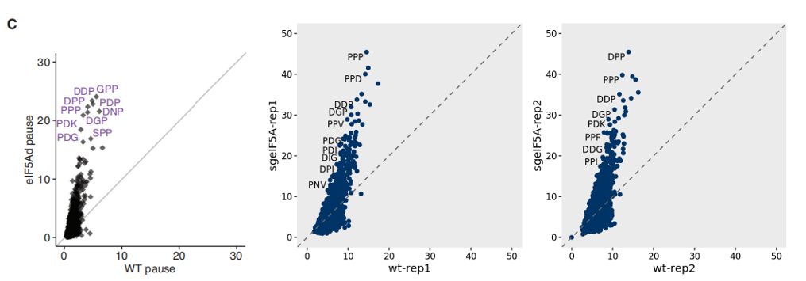

peptide_df <- multi_peptide_occupancy(object = obj0,
cds_fa = "./sac_cds.fa",
do_offset_correct = T,
peptide_length = 3)
pdf <- peptide_df$wider_format
head(pdf)
# # A tibble: 6 × 5
# pep_seq `sgeIF5A-rep1` `sgeIF5A-rep2` `wt-rep1` `wt-rep2`
# <chr> <dbl> <dbl> <dbl> <dbl>
# 1 AAA 7.05 8.19 8.86 10.2
# 2 AAD 10.5 12.2 11.8 13.7
# 3 AAE 9.81 10.8 11.4 12.6
# 4 AAF 9.21 9.90 9.33 12.7
# 5 AAG 9.75 9.73 9.67 11.3
# 6 AAI 8.70 9.24 10.1 12.0Multiple peptides occupancy
Intro
Role of Dipeptide and Tripeptide Motifs in Ribosome Profiling Analysis
Ribosome profiling (Ribo-seq) is a powerful technique that captures snapshots of ribosome positions on actively translated mRNAs, providing codon-resolution views of translation dynamics. Among the most informative features derived from such analysis are short amino acid motifs—particularly dipeptides and tripeptides—which are useful in identifying translational pauses and elongation efficiency.
Biological Significance of Dipeptide and Tripeptide Motif Analysis
Analyzing ribosome occupancy at the resolution of short peptide motifs reveals:
egions of ribosome stalling and queuing, e.g., polyproline (PP, PPP), or DVG, RDK, as highlighted in the 2017 eIF5A study (Schuller et al., Molecular Cell).
Differential sensitivity of motifs to elongation factors such as eIF5A.
Transcripts with low elongation efficiency caused by repetitive or structurally difficult motifs.
Insights into codon context effects, independent of codon optimality.
These analyses are foundational for understanding translational control under different cellular conditions or genetic perturbations.
Get multiple peptide occupancy
The ·multi_peptide_occupancy· function can be used to calculate the relative ribosome occupancy over peptide motifs. The peptide_length parameter specifies the length of the peptide motif to analyze (e.g., 2 for dipeptides, 3 for tripeptides).
The function returns a list containing both long-format and wide-format data on multi-peptide occupancy. The long-format data includes average occupancy values for each peptide in each sample, while the wide-format version organizes this information into a matrix, making it easier to visualize and compare across samples.
We can extract and examine the wide-format data as follows:
We provide a simple function, peptide_scatter_plot, for visualizing peptide motif occupancy between different samples using scatter plots. As shown below, our analysis results are consistent with previous literature: in eIF5A knockout samples, tripeptide motifs enriched in proline residues—such as PPP—exhibit increased ribosome occupancy:
# Generate scatter plots comparing wild-type and eIF5A-depleted replicates
r1 <- peptide_scatter_plot(data = pdf, x = "wt-rep1", y = "sgeIF5A-rep1")
r2 <- peptide_scatter_plot(data = pdf, x = "wt-rep2", y = "sgeIF5A-rep2")
# Combine the two plots using the patchwork package
library(patchwork)
r1 + r2